Modules
The initial core module entitled “GM1 - An introduction to human genetics and genomics” must be taken by all students studying on a registered course. Depending on the course you are taking you will need to take a combination of other modules, and possibly a dissertation or research project. Your selection of optional modules will be discussed with you during the first term, but please note that not all modules may be offered each year. The links below contain information on the modules offered during the 2020-21 ACY.
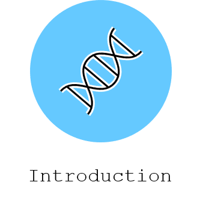
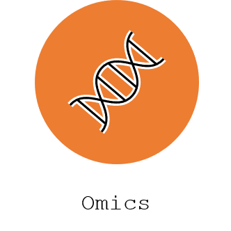
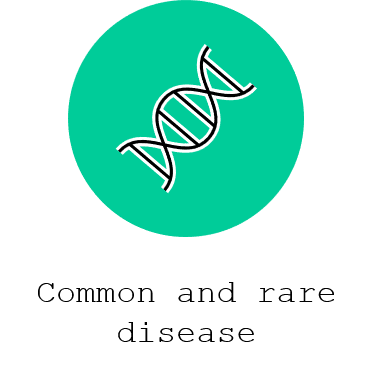
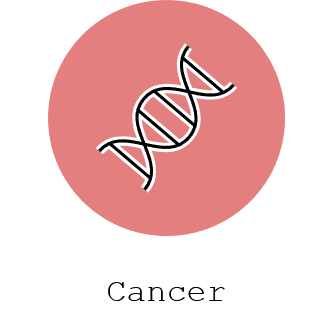
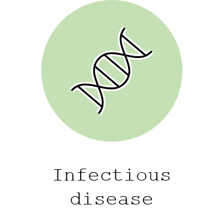
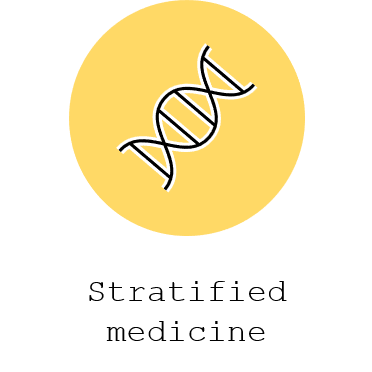
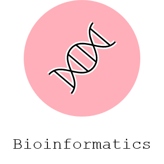
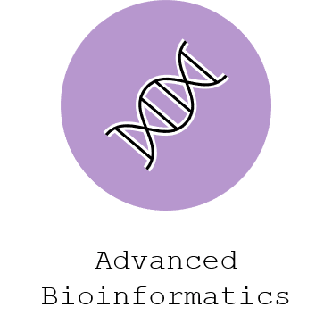
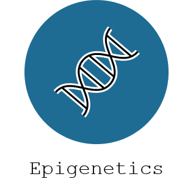
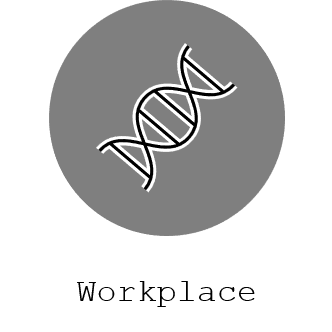
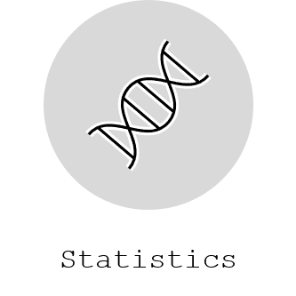
Preserved from https://www.genomics.cam/modules on 10 September 2026. Linked external services may require internet access. The original source snapshot is included with the migration files.